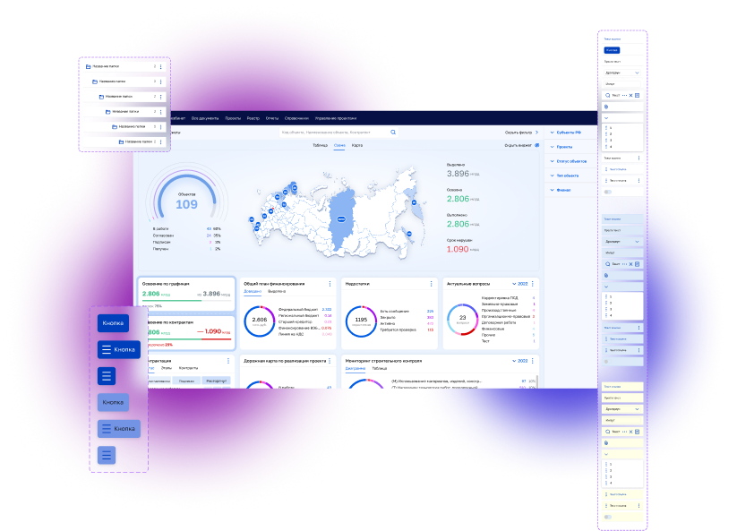

Осмокод: задача от ТЗ до прода за неделю вместо месяца
ЦУС — платформа для управления строительными проектами на стадиях ПИР и СМР. В ней ведут документацию, контролируют работы и согласуют решения все участники стройки.
- Роль
- Product designer
- Срок
- 4 года, продолжаю работу
- Продукт
- ERP для стройки, много модулей и внедрений
- Зона ответственности
- Дизайн-система, интерфейсы модулей, дизайн-ревью

Результат
×4Путь задачи от ТЗ до прода сократился с месяца до недели. Вдвое за счёт дизайн-системы и ещё вдвое за счёт ИИ-ассистента, который работает поверх неё.
Проблема
Одна платформа, разные интерфейсы
Модули платформы делали разные команды, а каждое внедрение под заказчика развивалось отдельно. В итоге у разделов были разные стили, навигация, таблицы и логика взаимодействия.
Из-за этого каждую новую функцию приходилось проектировать заново: рисовать экраны, собирать прототипы и подробно объяснять разработчикам поведение элементов. Поддерживать существующие разделы тоже было сложно.
Было
Интерфейсы разных внедрений
Таблицы, фильтры и кнопки в каждом модуле выглядели и работали по-своему.
Что я сделал
От библиотеки до прода
Собрал дизайн-систему и библиотеку компонентов
69 компонентов и 31 паттерн: кнопки, таблицы, деревья папок, фильтры, дропдауны, виджеты дашборда. У каждого компонента описаны состояния.
Унифицировал существующие модули
Перевёл разделы, которые делали разные команды, на общие компоненты и правила. Сейчас на библиотеке собраны 17 разделов платформы.
Готовлю макеты для разработки
Экраны собираются из библиотеки, поэтому разработчикам не нужно разбираться в каждом элементе заново.
Сопровождаю разработку
Дизайн-ревью, ответы на вопросы команды, работа с аналитиками над ТЗ.
Дизайн-система
Фрагменты библиотеки
Компоненты со всеми состояниями, из которых собираются экраны всех модулей и внедрений.
Стало
Единый интерфейс для всех внедрений
Новые разделы проектируются в одном стиле и по одним правилам, независимо от заказчика.
Следующий шаг
ИИ-ассистент поверх дизайн-системы
Дизайн-система дала понятные правила и готовые компоненты. Когда я подключил к процессу ИИ-ассистента, он смог опираться на них, и цикл задачи сжался ещё вдвое.
- Прототипы и варианты экранов собираются из компонентов системы за часы.
- Описание логики и состояний для разработчиков готовится вместе с макетом.
- Несколько задач уже прошли путь от ТЗ до прода за неделю.
Продукт
Экраны платформы
Дашборд, фильтры, список задач и мобильная версия. Всё собирается из компонентов дизайн-системы, поэтому новые экраны доходят до прода в 4 раза быстрее.